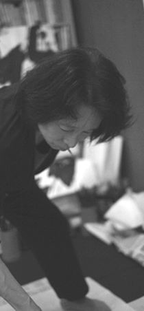

書道家
安達 蕉苑
SYOEN ADACHI


BOOKS
自己紹介

安達蕉苑（あだち しょうえん）
灑筆会（さいひつかい）主宰?グループ0（サイファ）代表
京都東山区在住
1976～81年、「毎日展」「書芸院展」「日本かな書道展」ほかに入選。
82年以降不出品。82年以降は、個展、グループ展、海外展に出展ほかハンガリーとの交流展主催等。
中日文化交流調印20周年記念特別賞、韓国美術協会理事長賞、エイズチャリティー美術展芸術文化労賞、審査員最優秀賞ほか受賞。
2006年、吉田神社（太元宮内西緒宮?東諸宮68ヵ所）額文字書。
グループ0（サイファ）とは
灑筆会（さいひつかい）の有志メンバーで1991年に結成。
0（サイファ）とはアラビア語を語源とする。巧拙にとらわれた思いをまず0にして筆をとろうというところから名付けた。
Syoen Adachi
President of Saihitsu-kai(calligraphy circle),Representative of Group 0(cipher).
Living in Higasiyamaku,kyoto 1976-1981,was selected for Mainichi Exhibition,Shogeiin Exhibition,Japan Kana-Calligraphy Exhibition,etc
Not exhibit since 1982.since 1982,exhibited at solo and group exhibitions and seversal international exhibition,and orgnnized Japan-Hungary Exchange Exibition.
and received meny prizes for overseas exhibitions